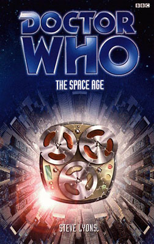

|
The Space Age
|
BASIC PLOT The Doctor and Fitz come across a city built as if from the pulp sci-fi magazines of the 1960s. In it, they find the mods and the rockers, still continuing their brainless fight from the time they were taken from, even though 19 years have passed. As the cycle of violence continues, the Doctor realizes that the city, and the world itself, is starting to fall apart. Compassion, meanwhile, has met the Maker. DOCTOR COMPANIONS MATERIALISATION CIRCUIT PREPARATORY READING CONTINUITY REFERENCES Pg 2 "Daleks! Cybermen! We're under attack! Snap out of it, woman!" Two obvious references, although we have to wonder, given that he's trying to shock Compassion from a stupor, why he doesn't mention the Time Lords. Compassion is in said stupor because of what's just happened to her in... oh, no, wait, that book got cancelled. Pgs 3-4 "He didn't really understand what had happened to her, how the hard-wired technology of the Remote and the telepathic influence of the Doctor's ship had combined to rebuild her from inside out." Interference part II and The Shadows of Avalon. Pg 7 "Ah, I picked you up in 1963, didn't I?" The Taint, but what dreadful moment of writing made this sentence come across as if the Doctor had forgotten this information? Pg 40 "A keypad was attached to the large metal box, and she punched a sequence of numbers into it. She guided Fitz's hand into a small aperture, and something dropped into it: a large white pill in a transparent plastic packet." This is quite a funny gag: the imagined future from the 1960s includes what is basically a replica of the TARDIS food machine, as imagined would be quite futuristic when it was designed in the 1960s. Pg 49 "You'd like it on Mechta." Parallel 59. "Daleks, Martians, Meeps, Xaxxons." You know the Daleks, The Ice Warriors et al, various comic books and the quite brilliant audio adventure The Ratings War (the menace Colin Baker puts into the phrase 'Beep the Meep' has to be heard to be believed; the man's quite brilliant!) and, unknown (Fitz is probably making the last one up). "He hadn't mentioned the loss of the TARDIS in days." The Shadows of Avalon. Pg 82 "She decided to take a closer look, but her Randomiser precluded accurate travel through the Vortex." The Fall of Yquatine. Pg 114 "But three-year-old Ricky McBride had seen aliens and monsters in his comics - and, since his parents had gone upmarket and bought a television set, in black and white on a flickering screen as well." That'll be The Chase, then, probably. Think how different this story might have been if Ricky had caught The Crusade instead. Pg 132 "The Doctor kicked the bike into high gear." No one's ever quite got over the Doctor riding a motorbike in the Telemovie, have they? Pg 141 "Compassion was sitting on the floor beside the bed, her back to the wall, her knees against her chest. She didn't react to Fitz's presence at all. Her eyes were open but starting through the ceiling. That, he supposed, was pretty normal for her now." Without certain knowledge, it's not clear why this is normal at all. It is, of course, a reference to that missing Shada-of-the-EDAs book again. Most of the other references to it have, presumably, been edited out (and maybe that's why the page count is so low). Pg 145 "Only now did Gillian see that a length of tickertape was being extruded from one of the slots on its side." Think The Mind Robber. Pg 150 "Mab, Macra, Macsellians, Mad Computers." The Shadows of Avalon, The Macra Terror and Gridlock, unknown, too many to count. "If all elephants are pink and Nelly is an elephant, what colour is Nelly?" Destiny of the Daleks and the original song spells it 'Nellie'. "Everything I say is a lie, and I'm lying now." The Green Death. Pg 160 "'Ladies and gentlemen of the city,' he intoned. He paused for a second before adding: 'Mods and rockers. I have an announcement to make: one of extreme importance to all your futures." Peoples of the Universe, please attend carefully... Logopolis, possibly not deliberately. Pg 176 "No no no no no no no!" In the context, one of the very few times that the Doctor utters a repeating series of identical monosyllables and it's entirely appropriate. Pg 187 "I bet it reminds you of the Remote, doesn't it?" Interference parts I and II. Pg 190 "It measures electrical current." The Doctor carried something similar in The Tomb of the Cybermen. Pg 193 Another reference to the Randomiser of The Fall of Yquatine. Pg 210 "'You've killed us all!' 'No, you've killed us all.'" Weirdly reminiscent of 'No, what a stupid fool you are' in The War Games. Pg 221 "The Makers already created a paradox when they brought the mods and rockers here. You told them to put it right. You don't want the Faction gaining another foothold." Faction Paradox from Alien Bodies et al. Pg 222 "You wouldn't be tempted to hit the reset switch? Even if it meant, say, getting the TARDIS back or getting Faction Paradox out of your life?" The Shadows of Avalon and Interference et al again. "'The Maker would like to help you,' said Compassion, 'but it cannot. Until you resolve the paradox in your past, your future is uncertain.'" This paradox, the result of the Faction virus from Interference part II, is the conflict between the Doctor's looming (Lungbarrow) and his half-human nature (from the Telemovie). Pg 232 "'And absolutely no mad computers,' said Gillian. 'Well,' said the Doctor, 'not many.'" The War Machines, The Green Death and so on. OLD FRIENDS AND OLD ENEMIES NEW FRIENDS AND NEW ENEMIES A number of utterly faceless mods and rockers, there, simply, to keep the violence going. The Maker(s). There are several, but they are one being with a group mind, so plural or singular is a matter of personal choice. It's very possible that they're the Enemy.
CONTINUITY COCK-UPS PLUGGING THE HOLES [Fan-wank theorizing of how to fix continuity cock-ups] FEATURED ALIEN RACES Some unusual non-breathing camels. Bit of a camel motif going on in the EDAs at the moment. FEATURED LOCATIONS The City, on a nameless asteroid in what transpires to be the year 3012AD. IN SUMMARY - Anthony Wilson |
|
 |